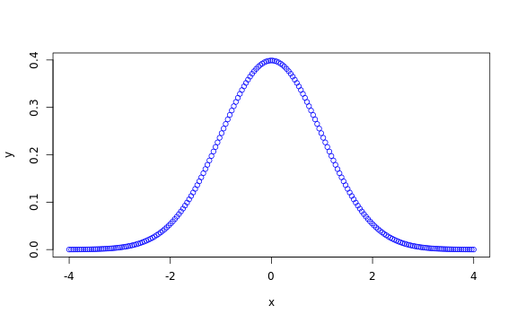
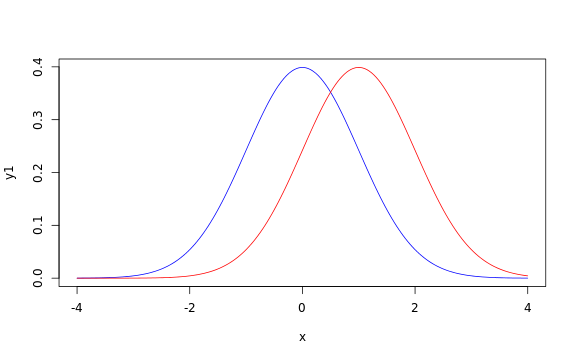

Introduction to simple plots and basic statistics in R
A sample dataset
Let's use data.frame to build a simple table to data to work with.
Usually you'd be loading data from an external file, but we'll use this example to demonstrate the rep function:
rep(c(“a”,“b”), times = 3)
[1] "a" "b" "a" "b" "a" "b"
rep(c(“a”,“b”), each = 2)
[1] "a" "a" "b" "b"
rep(c(“a”,“b”), times = 3, each = 3)
[1] "a" "a" "a" "b" "b" "b" "a" "a" "a" "b" "b" "b" "a" "a" "a" "b" "b" [18] "b"
Clotting time dataset
We'll have 12 observations, the first 6 with “drug1” the second 6 with “drug2”
clotData <- data.frame(
drugType = rep( c(“drug1”, “drug2”), each = 6 ),
clotTime = c( 8.8, 8.4, 7.9, 8.7, 9.1, 9.6, 9.9, 9.0, 11.1,
9.6, 8.7, 10.4)
)
clotData
drugType clotTime 1 drug1 8.8 2 drug1 8.4 3 drug1 7.9 4 drug1 8.7 5 drug1 9.1 6 drug1 9.6 7 drug2 9.9 8 drug2 9.0 9 drug2 11.1 10 drug2 9.6 11 drug2 8.7 12 drug2 10.4
Summary statistics
General summary
The summary function provides a simple way to get a standard set statistics:
summary(clotData)
drugType clotTime
drug1:6 Min. : 7.90
drug2:6 1st Qu.: 8.70
Median : 9.05
Mean : 9.27
3rd Qu.: 9.68
Max. :11.10 Summary by factor
What if we wanted individual summaries of the data for each drug type?
by(clotData, INDICES = clotData$drugType, FUN = summary)
clotData$drugType: drug1
drugType clotTime
drug1:6 Min. :7.90
drug2:0 1st Qu.:8.47
Median :8.75
Mean :8.75
3rd Qu.:9.03
Max. :9.60
--------------------------------------------------------
clotData$drugType: drug2
drugType clotTime
drug1:0 Min. : 8.70
drug2:6 1st Qu.: 9.15
Median : 9.75
Mean : 9.78
3rd Qu.:10.28
Max. :11.10 What happened there?
Aggregate by a factor
How can we make a new table with just average clot times for each drug?
aggregate(clotData$clotTime,
by = list(Drug=clotData$drugType),
FUN = mean)
Drug x 1 drug1 8.750 2 drug2 9.783
What happened there?
Simple plots
The plot function is magic!
plot(clotData)

This is a box plot.
Simple x,y plot
plot(c(1,2,3,4), c(2,3,4,5))
Simple f(x) plot
plot( function(x) { x * 4} )
Simple f(x) plot
plot( function(x) { x ^ 2} )
Let's plot a normal distribution in blue
x <- seq(-4, 4, length = 200)
y <- dnorm(x, mean = 0, sd = 1)
plot( x, y, col = “blue”)

Two plots on one graph
x <- seq(-4, 4, length = 200)
y1 <- dnorm(x, mean = 0, sd = 1)
y2 <- dnorm(x, mean = 1, sd = 1)
plot( x, y1, type = “l”, col = “blue” )
lines( x, y2, col = “red” )

A simple t-test
Let's look at those box plots again:
plot(clotData)
Are the sample means different?
The t-test {stats}
help(t.test)
help.search(“t.test”)
The formula expression
library(stats)
t.test(clotData$clotTime ~ clotData$drugType)
Welch Two Sample t-test
data: clotData$clotTime by clotData$drugType
t = -2.382, df = 8.625, p-value = 0.04221
alternative hypothesis: true difference in means is not equal to 0
95 percent confidence interval:
-2.02101 -0.04565
sample estimates:
mean in group drug1 mean in group drug2
8.750 9.783
The data.frame short cut
t.test(clotTime ~ drugType, data = clotdata)
Error: object 'clotdata' not found